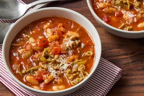

Home
Pasta

Description
Pasta is a traditional Italian dish made from wheat flour and water, often with eggs, and formed into various shapes. It is typically boiled and served with a wide variety of sauces, such as tomato-based, cream-based, or oil-based sauces.
Pasta is loved for its versatility and can be paired with vegetables, meats, cheeses, and herbs to create endless delicious combinations.
Ingredients
- 200g dried pasta (spaghetti, penne, fusilli, etc.)
- 1 tablespoon olive oil
- 2 cloves garlic (minced)
- 1 medium onion (finely chopped)
- 2 tomatoes (chopped) or 1 cup tomato puree
- Salt to taste
- ½ teaspoon black pepper
- ½ teaspoon chili flakes (optional)
- Mixed herbs or Italian seasoning
- Grated cheese (optional, for garnish)
- Fresh basil or parsley (optional, for garnish)
Steps
- Boil water in a large pot and add a pinch of salt.
- Add the pasta and cook according to the package instructions until al dente.
- Drain the pasta and set it aside.
- Heat olive oil in a pan over medium heat.
- Add minced garlic and chopped onion. Sauté until translucent.
- Add chopped tomatoes or tomato puree. Cook until the sauce thickens.
- Season with salt, black pepper, chili flakes, and mixed herbs.
- Add the cooked pasta to the sauce and toss well to combine.
- Let it cook for another 1–2 minutes to absorb the flavors.
- Garnish with grated cheese and fresh basil or parsley before serving.